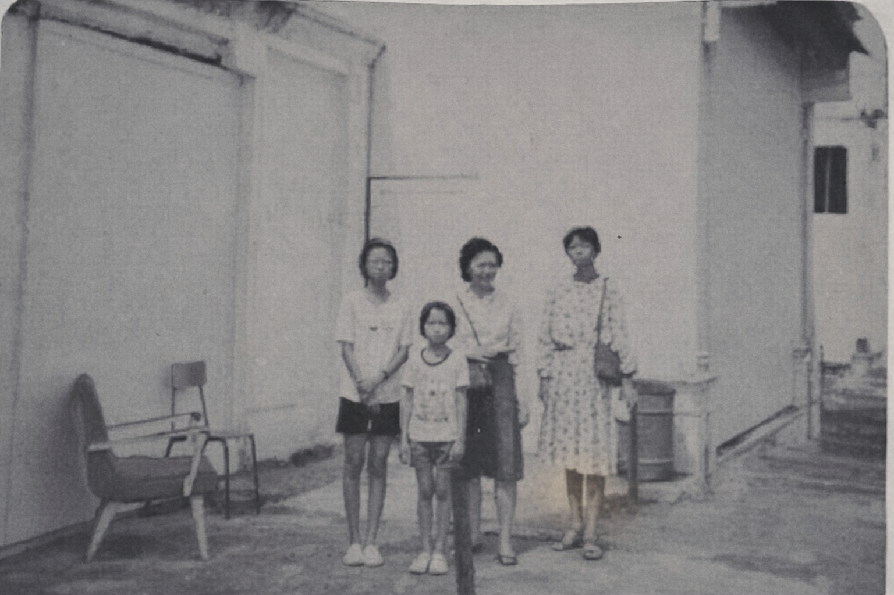
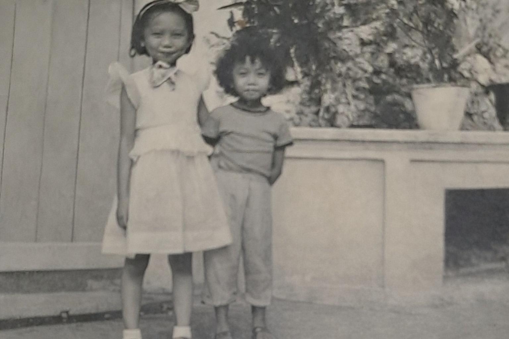
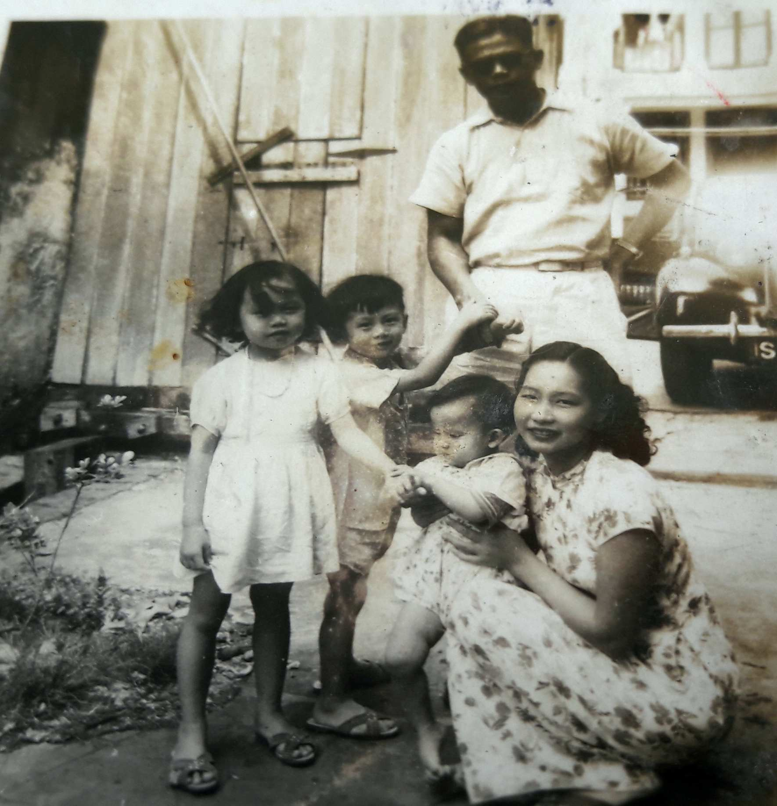
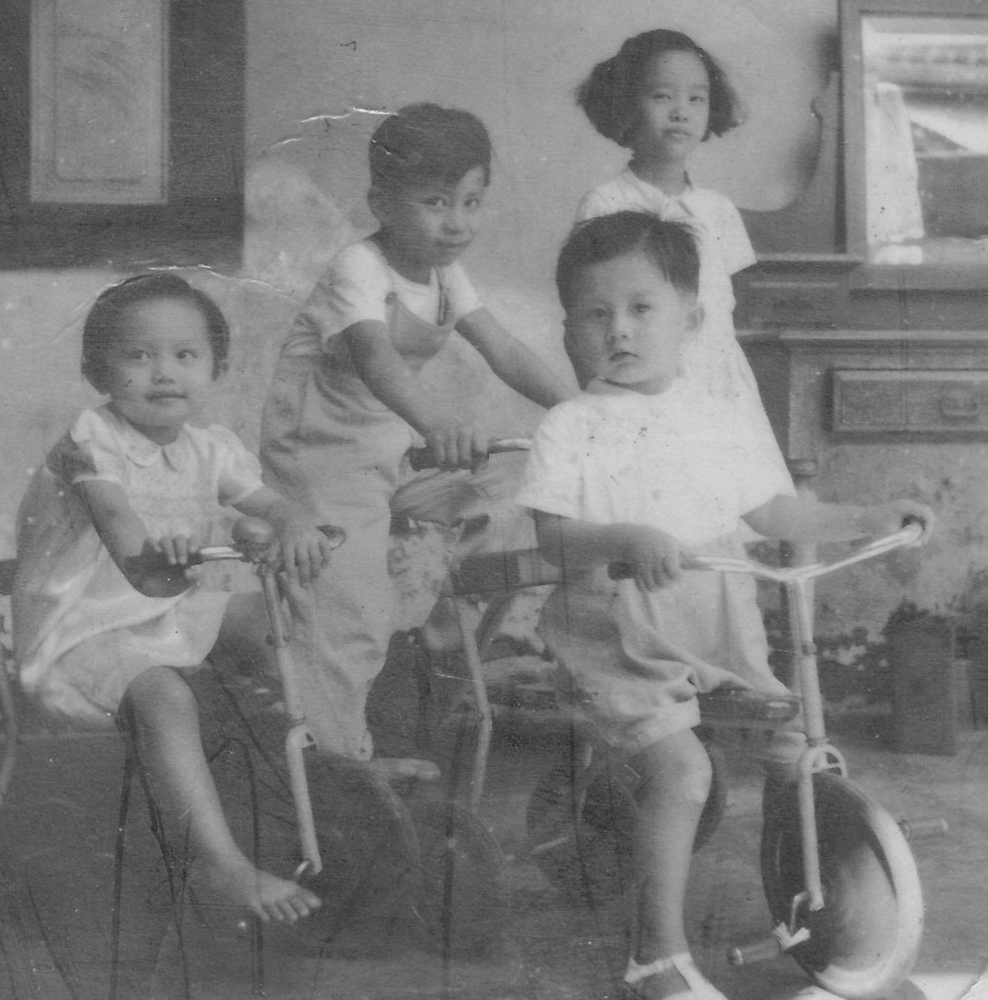
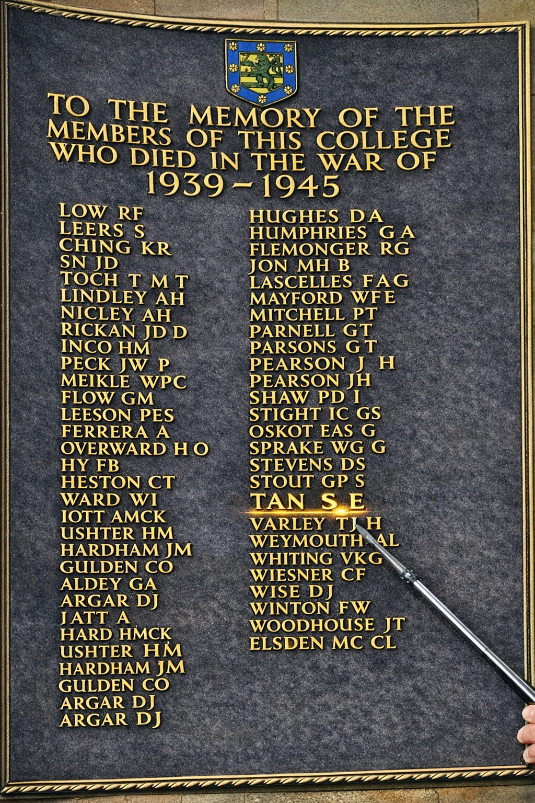
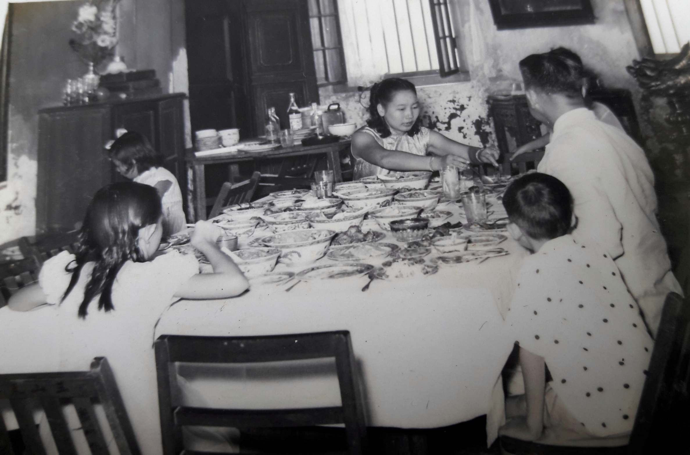
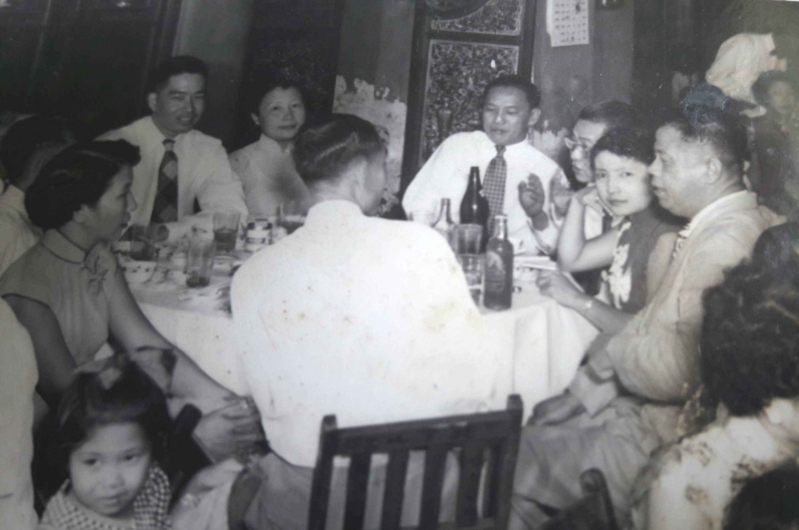

Last UpDate: 23 Apr 2026
Life is like a journey
Storms may come our way
sometimes with shafts of light and a rainbow
Photo: Majestic Rocky Mountains, Banff area, Canada . . Family Collection
The House of Tan Tang Niah, the people, their stories
Pic TT01: House of Tan Tang Niah, 37 Kerbau Road, Little India.

.
Pic TT02: Outside the old Garage, House of Tan Tang Niah, 1980s.

Note: the garage was demolished during heritage renovation in the 1980s
.
Pic TT03: Inside the old garage, House of Tan Tang Niah, early 1950s.

The fish tank at right, now demolished, was a choice spot for photos
.

Family photo inside the garage.

An exciting race was about to begin. Who will win ?
Tan Tang Niah (TTN) was a prominent Chinese community leader in early 20th‑century Singapore. He was a JP, a confectionery manufacturer, and owned a rubber plantation in Johore. The family residence was 40 Kerbau Road. This was later renumbered to 37 Kerbau Rd. He died in 1925 at the age of 63 (Ref 01). He left behind his wife, Mdm Teo Hong Beng, 8 sons, and 3 daughters.
This site tells the stories of some of TTN's more prominent offsprings, based on available documents
Positions he held included :
- President of Chung Cheng School
- assisted in Cheong Poon Girls School
- Hon Treasurer of Chinese High School
- an active member of the Chinese Chamber of Commerce
- President of Poh Chek Kiong association
- member of Poh Leong association
- a Justice of the Peace (JP)
Ref 01: OrbituraryStraits Times 1 Jul 1925 pg 8
TTN married Mdm Teo Hong Beng , to whom he bequeathed the family home at 37 Kerbau Rd. This home was later designated a National Monument and acquired by the Singapore Government.
Mdm Teo Hong Beng passed away 30 Jun 1940.(Ref 02)
Ref 02: Orbituary - Mrs Tan Tang Niah.Straits Times 2 Jul 1940 pg 2
Sons and daughters of Tang Tang Niah
Note: Tan Boon Chiat, in the Table below, was TTN's son from his first wife (she did not accompany him to Singapore)
Sons and Daughters of TTN
- Sons . . . . . . . . . . . Daughters
- Tan Boon Chiat
- Tan Sim Boh . . . . Tan Biau Eng (Mrs Kang Tiang Kim)
- Tan Sim Eng . . . . Tan Biau Hwa (Mrs Cheong Ann Sim)
- Tan Sim Teck . . . Tan Biau Luan (Mrs Lim Peng Han)
- Tan Peng Choo
- Tan Sim Keng
- Tan Kim Hoe
- Tan Kim Guan
.
.
Tan Sim Boh (S. B. Tan)

.
Identity & Background
First son of TTN (with Mdm Teo),
Professional Career
• Studied in ACS, took up Law at Cambridge University. (Ref 04)
• Barrister, called to the Bar.
• Practised with Messrs. Donaldson & Burkinshaw
• Left Law for business, 1937
• Municipal Councellor, board member of Education Board, Singapore Improvement Trust, among others
.
Public Service
• Municipal Commissioner (Ref 03)
• Board member Education Board, 1941 (Ref 05)
• Board member, Singapore Improvement Trust (SIT) (Ref 06)
• Board member, Chinese Bankers Trust Co (Ref 07)
• Justice of the Peace (JP)
.
Ref 03: S B Tan, 34, youngest Municipal Commissioner.Malaya Tribune, 23 Oct 1935, Pg 19
Ref 04: S B, ACS old boy gives talk Malaya Tribune, 20 Jun 1923, Pg 6
Ref 05: Education Board Member Straits Times, 11 Jan 1941, Pg 11
Ref 06: Singapore Improvement Trust (SIT) Straits Times, 26 Aug 1939, Pg 14.
Ref 07: Bankers' Meeting Malaya Tribune, 6 Oct 1938, Pg 20
.
Military Service
- Captain, Chinese Company, Singapore Volunteer Corps (S.V.C.).
- Died February 1942 during the Battle of Singapore.
Personal Life
Married Margaret Chang on 14 October 1933 in Shanghai. Tan Sim Boh Road, behind Thomson Medical Centre, is named in his honour.
.
.
Tan Sim Eng (S. E. Tan)

Photo was taken from Kranji War Memorial, around 2015
.
Pic SE02: S E Tan, pic taken at Downing College, Cambridge University, 2019.

Photo was taken by a family member, not in picture. She was onsite at Downing Hall, Canbridge University, around Sep 2019. The metal pointer she used is visible in this photo.
.
Second son of TTN. Queen’s Scholar (1933), University of Cambridge. Became a Lawyer, Secretary of Chinese Bankers Trust (1938), and volunteer Machine Gunner with the Straits Settlements Volunteer Force (SSVF).
.
He was detained during the Japanese Sook Ching operation after the fall of Singapore in 1942 and never seen again. His name appears at the Kranji War Memorial. (Pic SE01)
.
Note: Tens of thousands of male Chinese of fighting age were murdered by the Japanese Secret Police shortly after the fall of Singapore on 14th Feb 1942. This massacre is known as the Sook Ching massacre.
Education
- Studied in ACS. Honours, Cambridge Certificate, 1929 (Ref 08)
- Won Queen's Scholarship, 1932 (Ref 09)
- Studied Law at Cambridge (Ref 10)
- Graduated 1938/1939, returned to Singapore.(Ref 10)
.
Career
- Lawyer, and Sceretary to the Chinese Bankers Trust (Ref 06)
Military Sevice
.
Ref 08: S E Tan, ACS Exam Results.Singapore Free Press and Mercantile Advertiser, 9 Apr 1930, Pg 7
Ref 09: Queen's Scholar Straits Times 22 Dec 1932 Pg 12
Ref 03: Graduation, and return Straits Budget 4 Jul 1940 Pg 6
.
.
Tan Peng Choo (P. C. Tan)

.
P C Tan was the 4th son of TTN. As a youth, he assisted his father with money‑collection errands. He gained familiarity with many prominent merchants of the time.
.
Pre war Years
Singapore was bombed by the Japanese in late 1941 during the Battle for Singapore. 40 Kerbau Road (later renumbered 37 Kerbau Road) served as an ARP (Air Raid Precaution) Post during this time. P. C. was appointed the ARP Warden for a sub zone of Kandang Kerbau Division(Ref 11).
.
As ARP Warden, part of P C's duty was to check at night for naked lights from houses. Recalcitrant Households who flouted the prevailing wartime "Blackout" regulation were charged in Court. Naked lights in time of war put the entire community at risk.
People in the neighborhood who were wounded, homeless or needed help went to see P C. He told stories of driving the wounded to hospital, or to the docks to pick up supplies, at times, even when the air raid was still in progress.
PC also told a story about SB's dog. SB had an Alsatian. The Alsatian refused to eat when his master failed to return, after the fall of Singapore. The dog died shortly after.
After the fall of Singapore, PC managed to evade the Sook Ching dragnet, and escaped to the Cameron Highlands.
.
Postwar Years
He returned to Singapore in 1946, after the British recaptured Singapore. He started a successful business, and little by little, rebuilt the family house, which had been looted, and in a bad state.
He later took on teaching both full-time and part‑time when business became bad. He passed away in the mid-1970s
.
Education
- ACS, Senior Cambridge, 1929 (Ref 12)
- Raffles College, 1932 (Ref 13)
.
Pre-War Working Life
- Helped run his father's rubber plantation in Johore
- Taught Basic English (Ref 14)
- Active contributor to local community (Ref 15)
- Keen Chess player (Ref 16)
.
Wartime Service
- ARP Warden, Kandang Kerbau Zone, during Battle for Singapore, 1941/42 (Ref 11)
.
Post War
- He ran a successful business, restored Kerbau Road, bit by bit
- In the early 1950s, Singapore was not as safe and secure as it is today. PC told of times when gangsters openly came to his office in broad daylight, and demanded "protection money" (Ref 17, gang extortion).
- In the late 1950s, P C and his young family moved out of Kerbau Road and went to stay in the Katong/Joo Chiat area
- In the early 1970s, in semi-retirement, P C also took time to enjoy road trips.
- He passed on in the mid 1970s.
.
Ref 11: Govt ARP Warden Notice, 13 Jan 1942 Singapore Free Press, 13 Jan 1942, Page 3
Ref 12: ACS Exam Result Singapore Free Press and Mercantile Advertiser, 13 Mar 1929, Pg 12
Ref 13: Raffles College Straits Times, 18 Apr 1932, Pg 12
Ref 14: Basic English Course Straits Times, 27 Oct 1936, Pg 10
Ref 15: School fee Malaya Tribune, 29 Nov 1929 pg 2
Ref 16: Chess Straits Times, 6 Jan 1939, pg 23
Ref 17: Extortion Singapore Standard, 23 Mar 1956, Pg 1
.


.

The front dining hall was used for important family occasions.

A Wedding Banquet for a close relative. There were also tables at the left and right garage areas. Mid 1950s.
.
Press the 3-bar menu at top right to go next page or back to top
.